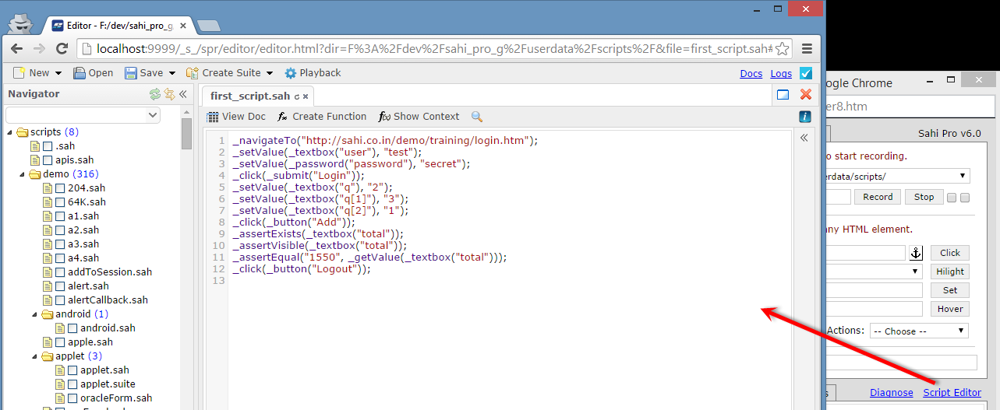

Sahi Pro - Quick Tutorial
Prerequisites
Java 1.5 or above is needed for running Sahi.Download Sahi Pro
Download Sahi Pro from Sahi's download archives. You will need a valid license to run Sahi Pro.If you do not have a valid license yet, you can register here for a 30 day evaluation license.
Install Sahi
- Double click on install_sahi_pro_xxx.jar to start the installer. If Java is configured properly, it will launch the installer.
info If the installer does not launch, or if the jar file is opened as if it is a zip file, cancel the unzip dialog,
open a command prompt, cd to where the file is downloaded, and run
java -jar install_sahi_pro_xxx.jar - Install Sahi in a folder path without spaces. (If there are spaces, Chrome will have trouble launching correctly.)
Upgrade Sahi
abstract
This section describes how to upgrade Sahi Pro.
- On upgrading Sahi Pro, existing "userdata" folder will not be changed.
However, the new userdata folder will be available insahi_pro/config/userdata_template
danger
IMPORTANT: Please take a backup of the entire Sahi installation folder before performing the upgrade.
- Assuming you have Sahi Pro Installed at
C:\SahiPro
- Download latest version of Sahi Pro Click here
- Install the latest version in the same folder where existing Sahi Pro was already installed (
C:\SahiPro).
-
A confirmation window will popup. Click
Yeson it. -
Complete the installation process
info
Since the userdata folder has not been copied over, latest changes to reports, bin etc. may not be visible to you.
If you have not made any changes in say,
copy over from
If you delete
If you have not made any changes in say,
userdata/config/reports, you can delete the existing userdata/config/reports folder andcopy over from
sahi_pro/config/userdata_template/config/reports to reflect the new changes.If you delete
sahi_pro/userdata folder, you can copy over sahi_pro/config/userdata_template and rename the folder to sahi_pro/config/userdataStart Sahi Dashboard
The Sahi Dashboard automatically starts the Sahi proxy, and allows launching of configured browsers.(Sahi automatically toggles the browser proxy when a browser is opened and closed).

Start Sahi Dashboard by any of the following methods
- Double click on the desktop shortcut
or
- Go to Start -> All Programs -> Sahi Pro -> Start Sahi (Click)
or
- Start from the command line.
Windows:
- Go to<sahi_root>\userdata\binand runstart_dashboard.bat
Linux
- Go to<sahi_root>/userdata/binand run./start_dashboard.sh
warning
Sahi looks for browsers in their default install location, and if found, displays it on the Dashboard.
If you do not see your browsers, configure your browser paths correctly in browser-types.xml.
If you do not see your browsers, configure your browser paths correctly in browser-types.xml.
warning
If you are using Internet Explorer via a VPN or Datacard (like Tata Photon, Reliance etc.),
you may need to to explicitly modify the proxy settings for your browser
you may need to to explicitly modify the proxy settings for your browser
Recording through Sahi
- Bring up the browser of your choice by clicking on any of the browser icons. You should see a browser window like this:

- Press ALT and double click on the browser window. Sahi's Controller window will pop up.
info If that does not work, press CTRL and ALT keys together and then double click. Make sure popup blockers are turned off. For further trouble shooting have a look at this help link.
- On the Controller, go the the Record tab (would be selected by default).

- Give
first_script.sahas the name for the script, and click 'Record' - Click on the "Sample Application" link on Sahi's start page
This will bring up Sahi's sample application.
- Enter username 'test' and password 'secret' and click 'Login'
The last recorded step will be visible in the 'Evaluate Expression' box.
- On the next page, which shows a shopping cart, add quantities 2,3,1 and click 'Add'. This will display the added items
at the bottom and its total.
Add assertions
A script normally consists of actions performed on the web page and then verification of functionality. For verifications,we use assertions. Sahi allows adding assertions while recording. To add an assertion on the total field:
- Move the mouse over any html element while pressing CTRL key.
warningOn Mac, the application window needs to be in focus to receive mouse events.
First bring the application window into focus by clicking on the title bar, or by using Command-Tab. - The Accessor field will get populated in the Controller.
In this case, let us hover over the text field near 'Grand Total' - Click the "Assert" button to generate assertions for the element.
- They will appear in the "Evaluate Expression" box.
- Click "Test -->" to check that the assertions are true.
- Once satisfied, click on "Append to Script". This will add the assertions to the Script.
- Click 'Logout' to logout of the application.
- Click 'Stop' on the Controller to finish recording.
info
You can evaluate any javascript using "Evaluate Expression" and "Test -->". Actions performed via the Controller
will not be automatically recorded. Only actions performed directly on the page are automatically recorded.
This lets you experiment on the webpage at recording time with out impacting the script.
will not be automatically recorded. Only actions performed directly on the page are automatically recorded.
This lets you experiment on the webpage at recording time with out impacting the script.
info
Note that the Controller can be closed and reopened at any time, without disrupting recording.
Playing back
If not already open, open the Sahi Controller (ALT-DblClick on the page).- Enter the script name
first_script.sahin the 'File:' field (with the help of the autocompletion feature). - Enter the Start URL as 'http://sahi.co.in/demo/training/'.
For your own scripts, if you had started recording from http://www.google.co.in, use that URL. - Click 'Play'.
Note that the Controller can be closed at any time, without disrupting playback.
View Logs
On the Controller, go to Playback tab and click on "View Logs" link at the bottom right.It will open a window with the results in HTML.
- User can filter the results by using pagination tool or by using sql query.
Clicking on a line in the logs will drill down to exact line in script.
You can also view the logs at http://localhost:9999/logs
Edit the recorded script
Recorded scripts need to be refactored into functions for better readability and maintenance.Click on the Script Editor link on the Recorder to view and edit the currently recorded script.

Sahi scripts are simple text files which use Javascript syntax.
Notice how there are no waits or complex XPaths in the recorded script.
While the script looks simple, it is still not talking in the language of the business.
For example, if one tester was to communicate these action to another, she would describe it as follows:
- Login with 'test' and 'secret'
- Add books to cart in quantities 2,3 and 1
- Verify total is 1550
- Logout
To accomplish this, we need to create well named functions from our recorded steps.
On the Script Editor:

- Select the statements pertinent to login
- Click on 'Create Function'
- Give a name to the function, in this case 'login'
- Edit the function parameter names if required
- Click on Continue. This will create a function, and then call it with the correct parameters
- Keep doing this for the other lines, so that the script looks like this:
/* --Objects Definitions Above-- */ function login($user, $password){ _setValue(_textbox("user"), $user); _setValue(_password("password"), $password); _click(_submit("Login")); } function addBooks($qJava, $qRuby, $qPython){ _setValue(_textbox("q"), $qJava); _setValue(_textbox("q[1]"), $qRuby); _setValue(_textbox("q[2]"), $qPython); _click(_button("Add")); } function verifyTotal($total){ _assertExists(_textbox("total")); _assert(_isVisible(_textbox("total"))); _assertEqual($total, _getValue(_textbox("total"))); } function logout(){ _click(_button("Logout")); } /* --Functions Above-- */ _navigateTo("http://sahi.co.in/demo/training/"); login("test", "secret"); addBooks("2", "3", "1"); verifyTotal("1550"); logout(); - Run this script and view the logs. The logs now look nicely folded down at the function level.
Clicking on 'login' will just open up the steps that were performed under login.
This helps in easy understanding of logs and helps isolate problems easily.
-
This script can further be broken into 2 scripts, one with the function definitions and another with just the calling code.
To create new files etc. click on the 'Script' link on the Dashboard. This will open your scripts folder.
Edit your script using any text editor like Notepad++ or Eclipse.
first_script_lib.sah
function login($user, $password){ _setValue(_textbox("user"), $user); _setValue(_password("password"), $password); _click(_submit("Login")); } function addBooks($qJava, $qRuby, $qPython){ _setValue(_textbox("q"), $qJava); _setValue(_textbox("q[1]"), $qRuby); _setValue(_textbox("q[2]"), $qPython); _click(_button("Add")); } function verifyTotal($total){ _assertExists(_textbox("total")); _assert(_isVisible(_textbox("total"))); _assertEqual($total, _getValue(_textbox("total"))); } function logout(){ _click(_button("Logout")); }
first_script.sah
_include("first_script_lib.sah"); _navigateTo("http://sahi.co.in/demo/training/"); login("test", "secret"); addBooks("2", "3", "1"); verifyTotal("1550"); logout();
Running a test from command line
For running any script from the command line you can use the included testrunner.bat or testrunner.sh files.- Click on the 'Bin' link on the Dashboard. This will open a command window at sahi/userdata/bin
(Or open a command prompt and cd to sahi/userdata/bin) - Type
testrunneron the opened command prompt - This will show a list of options.
- Copy the second command for .sah file and change the script name and start url
testrunner first_script.sah http://sahi.co.in/demo/training/ ie
- To playback simultaneously on multiple browsers, run
testrunner first_script.sah http://sahi.co.in/demo/training/ ie+firefox+chrome
Suites - Automating playback of multiple scripts
To playback multiple scripts in batch mode, we need to first create a .suite file.- Create another script file
invalid_login.sahwith the following contents.
Now we have 2 scripts, first_script.sah and invalid_login.sah. We will run them in a batch._setValue(_textbox("user"), "test"); _setValue(_password("password"), "badpassword"); _click(_submit("Login")); _assert(_isVisible(_div("errorMessage"))); _assertEqual("Invalid username or password", _getText(_div("errorMessage")));
- Go to
sahi/userdata/scriptsfolder and create a new file with nametutorial.suiteand the following contents
first_script.sah invalid_login.sah - Run this suite from command line just like we ran a single script
Sahi will automatically launch 2 chrome browsers (almost simultaneously) and run the scripts, close and report success or failurecd sahi/userdata/bin/ testrunner tutorial.suite http://sahi.co.in/demo/training/ chrome
- The logs will look like this:
Clicking on any of the script links will take you to the logs of the individual scripts as seen before.